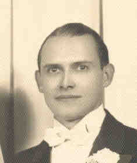

 Raymond LAMARCA (1904-1984) |
Raymond LAMARCA
• He emigrated on 26 Jul 1916 from Palermo, Italy. 7 Raymond married Helen Marie YALENTY, daughter of Filippo IALENTI Sr. and Margaret STRAZZA, on 16 Apr 1941 in Allegheny County, PA.1 2 (Helen Marie YALENTY was born on 18 Feb 1916 in Penn Township, Allegheny, PA,8 died on 26 Jul 2001 in Pittsburgh, Allegheny, PA 6 9 10 and was buried in Allegheny Cemetery, Pittsburgh, Allegheny, PA 11.) |
1 Pennsylvania, Various County Courthouses, Pennsylvania County Marriages, 1885-1950 (Pennsylvania (via FamilySearch)).
2 Thomas Hoey, Oral Interview of Helen Yalenty LaMarca (Pittsburgh, PA).
3 Social Security Administration, Death Master File (http://www.ancestry.com/search/rectype/vital/ssdi/main.htm).
4 Thomas Hoey, Oral Interview of Helen Yalenty LaMarca (Pittsburgh, PA), 28 Jan 2000.
5 Funeral Home, Mass Card (Obtained from Helen (Yalenty) LaMarca).
6 Thomas Hoey, Firsthand Knowledge.
7 New York, Passenger and Crew Lists (including Castle Garden and Ellis Island), 1820-1957 (Microfilm Serial: T715, 1897-1957), Roll 2483; Line: 25; Page Number: 70.
8 Noelle Calabro, The Calabro and Yalenty Families (unpublished) (Pittsburgh, PA, 2 May 1977).
9 Pittsburgh Post Gazette, Helen Yalenty LaMarca Obituary (Pittsburgh, PA, 28 Jul 2001).
10 Funeral Home, Mass Card (Thomas Hoey).
11 Find A Grave, Inc, Find-A-Grave.com (http://www.findagerave.com).